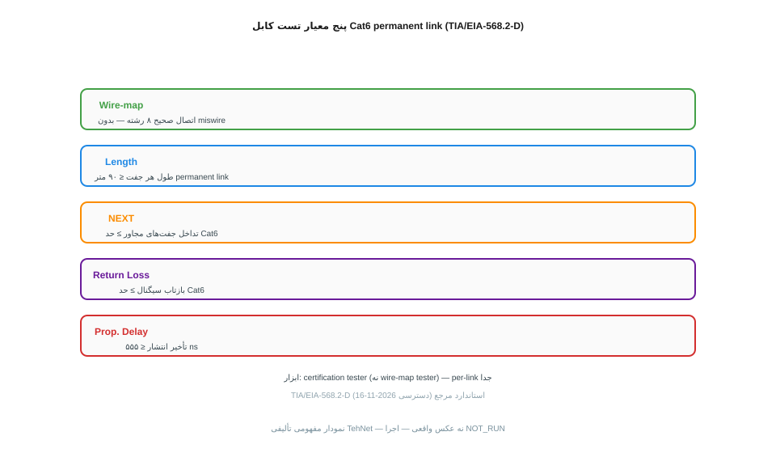

وضعیت درس: DRAFT / NOT_DEPLOYED — در انتظار مرور. (درس مصوب سرفصل N3: گزارش تست کابل)
آموزش تصویری از سری پشتیبانی؛ مخاطب: کارشناس شبکه.
سناریوی کاملاً فرضی و آموزشی با دادهٔ ساختگی؛ هیچ شبکهٔ واقعی دستکاری نشده و هیچ اجرای واقعی NOT_RUN است.
نمودار مفهومی و تألیفی است (نه عکس واقعی).
گزارش تست کابل یعنی: برای هر لینک، پنج معیار (wire-map، length، NEXT، return loss، propagation delay) با ابزار تستر مناسب اندازهگیری، بهصورت عددی ثبت و با حد آستانه مقایسه شود. گزارش بدون اعداد یا با «OK» کلی قابلاستناد نیست. ابزار تستر cable-certificationlevel (نه صرفاً wire-map tester) برای شبکهٔ ۱ گیگابیت کافی است؛ برای 10G Cat6a لازم است.
| بند | مقدار فرضی |
|---|---|
| شبکه | دفتر ۱۲ کاربر — ۱۲ لینک Cat6 از patch panel تا کاربر |
| تستر | Cable certification tester (مثل Fluke DSX-5000 یا مشابه — مدل دقیق از پروژه واقعی) |
| استاندارد تست | TIA/EIA-568.2-D Cat6 permanent link |
| اجرای واقعی | NOT_RUN — قالب آموزشی |
| معیار | تعریف | آستانهٔ قبول (Cat6 permanent link) | ابزار |
|---|---|---|---|
| Wire-map | اتصال صحیح ۸ رشته | بدون miswire/short/open | هر تستر |
| Length | طول هر جفت ≤ 90 متر (permanent link) | ≤ 90m ± 10% | تستر با TDR |
| NEXT (Near-End Crosstalk) | تداخل جفتهای مجاور | ≥ حد Cat6 در فرکانس تست | certification tester |
| Return Loss | بازتاب سیگنال از ناهمگونی امپدانس | ≥ حد Cat6 | certification tester |
| Propagation Delay | تأخیر انتشار | ≤ 555 ns برای 90m | certification tester |

سند رسمی TIA/EIA-568.2-D این آستانهها را تعریف میکند — در این درس فقط نام برده شده و اعداد دقیق per-frequency در سند رسمی است (URL عمومی بدون نیاز به fetch خاص).
| لینک | Wire-map | Length (m) | NEXT (dB) | Return Loss (dB) | Delay (ns) | حکم |
|---|---|---|---|---|---|---|
| A-101-P01→SW1:ether1 | ✓ | 28 | 44.3 | 23.1 | 482 | PASS |
| A-101-P02→SW1:ether2 | ✓ | 31 | 43.8 | 22.7 | 495 | PASS |
| ... | ... | ... | ... | ... | ... | ... |
| A-101-P07→SW1:ether7 | ✗ miswire | 22 | — | — | — | FAIL |
(اعداد بالا نمونهٔ قالب آموزشیاند — NOT_RUN؛ تست واقعی با عدد واقعی جایگزین میشود.)
| قاعده | دلیل |
|---|---|
| هر لینک جدا تست شود | یک لینک خراب، کل شبکه را تحت تأثیر قرار میدهد |
| اعداد خام + حد آستانه ثبت شود | «OK» کلی قابلررسی نیست |
| مدل تستر و نسخهٔ firmware ثبت شود | قابلتکرار بودن تست |
| PASS/FAIL per-link (نه per-batch) | هر لینک مستقل ارزیابی میشود |
| لینک FAIL → تصویر/کپی خروجی تستر ضمیمه | قابلررسی برای پیمانکار |
| نشانه | علت محتمل | بررسی | راهحل |
|---|---|---|---|
| NEXT پایین | کابل نزدیک منبع مغناطیسی یا جفتها جدا نشده | مسیر کابل + جداکردن جفتها در ترمینال | بازترمینال با جدایی صحیح |
| Length > 90m | طول فیزیکی از حد | اندازهگیری واقعی | کوتاهکردن یا switch میانی |
| Return Loss پایین | امپدانس ناهمگونی (کابل/کانکتور) | کانکتورها را چک کنید | بازترمینال با کانکتور استاندارد |
| کابل بدون برچسب | عدم برچسبگذاری در نصب | wire-map + بررسی فیزیکی | برچسبگذاری مجدد |
| لینک 10G ناممکن روی Cat5e | کابل Cat5 حد Cat6 را ندارد | تست certification | کابل Cat6/Cat6a تعویض |
| پیوند | مقصد |
|---|---|
| درسهای مرتبط | N2 رک و کابل · N1 عیبیابی |
| نقشهٔ کامل سری | topic map |
| تست کابل استاندارد برای سازمان شما | خدمات راهاندازی شبکهٔ تهران |
| درس بعدی سری | در topic map ثبت است |